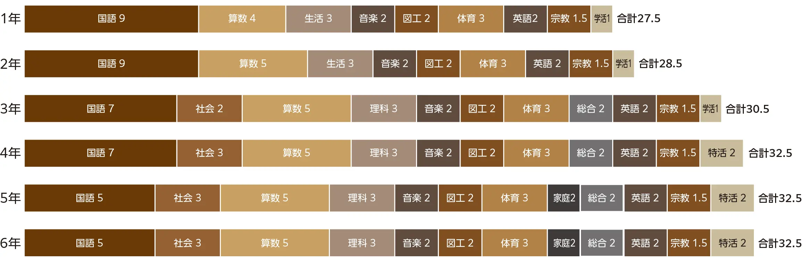
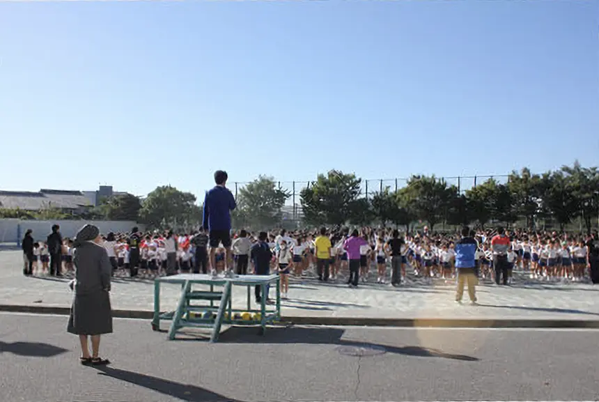
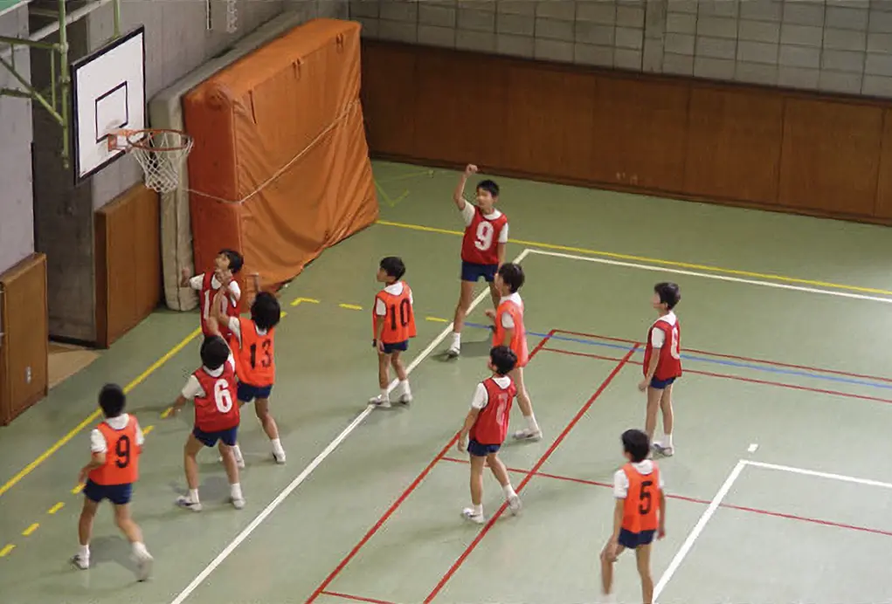
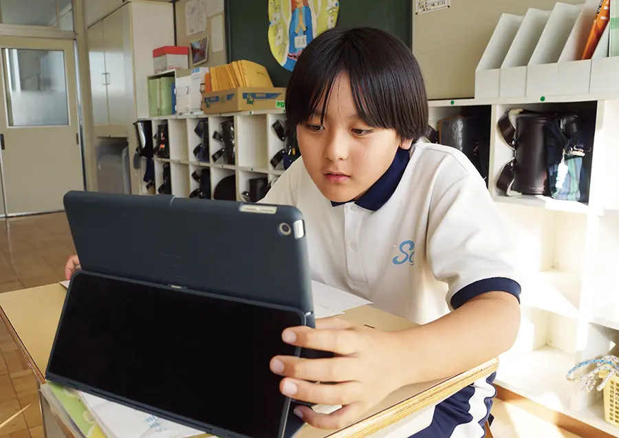

星美の教育は、朝や放課後も大切にしています。
朝は一日のスタートを切るための準備として、放課後は学習やクラブ練習、 子どもと教員が信頼関係を深めるための時間として、さまざまな取り組みをしています。
朝会の前、「チャレンジタイム」という学習時間を設けています。
この「チャレンジタイム」は、漢字や計算、読書といった学習を短時間で集中して行う取り組みです。
日々の鍛錬を目的としており、繰り返し行うことによる基礎学力の向上だけでなく、脳の準備運動としても効果を期待しています。
星美では、授業前に必ず朝会があります。 曜日ごとに全校、児童会、宗教、体育朝会などがあります。
各朝会のテーマごとに心の糧になる講話があったり、児童会からのイベントの紹介があったり、運動をしたりします。
テレビ放送を通して行う朝会のときには、放送委員が放送機器を使って、全校に放送を流します。
その後、行われる各クラスの朝の会では、担任が朝会の内容を受けて指導し、その日の連絡事項を確認します。

特別音楽クラブ（聖歌隊・金管バンド）週に2回と、試合前には運動系クラブ（バスケットボール・野球・サッカー）が練習しています。
特別音楽クラブ、運動系クラブともに高学年の子どもたちが、早朝から活動しています。

５・６年生を対象に、帰りの会の後「パワーアップ」の時間（火・木曜日）を設けています。
この時間は、子どもたちの学力向上のために特別に設けた時間です。特に受験を意識し、発展的な問題の演習を行います。
